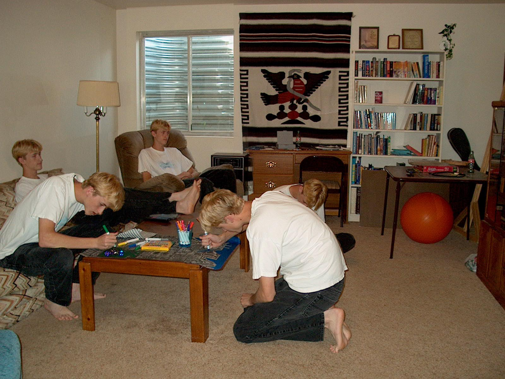

Lesson 13 - Creating Images
LEARN
Reading for Today
- Read 2.6 Images
- Follow Reading Schedule
Today
- Creating Images
- Optional Practice Exercises
Types of Images
- Raster Images - Abobe Photoshop
- Vector Images - Adobe Illustrator
Raster Images
- Raster images contain a grid of pixels
- Each pixel is an RGB value
- Raster images get the "Blockies" when scaled
- Cameras capture raster images
Image Editor Software
- Adobe Photoshop
- GIMP (since 1998)
Photoshop History
- Introduced 1990 (13 versions)
- 2003 Creative Suite (6 versions)
- 2013 Creative Cloud (5 versions)
Cost
- $1000 in 1990
- Software as a Service - SaaS
- $120/year ($60/year for students)
Image Size
- Large images are slow to load
- Displayed images should be limited to 1000 x 1000 pixels for featured photos
- Limit accent photos to 500 x 500 pixels
- Use Photoshop to scale your images
Display size
- Use HTML width attribute
- width="200"
- width="50%"
- Use both CSS properties
- max-width: 500px;
- width: 800px;
- width: 80%;
Examples

Multiplicity

Vector Images
- Vector Images are a set of shapes
- They scale to any size
- Artwork is designed by hand on the computer
- Use Adobe Illustrator to create vector images
Adobe Illustrator
- Vector Graphics Tools
- Scalable to any desire size
- Often rendered as raster images
BUILD
Project 5 - Page Testing
OPTIONAL EXERCISE - Photoshop
- Past classes have used computers in Kepner
- This year most students do not have easy access to Photoshop or Illustrator
- Do this exercise on your own if you want to
Learning Adobe Photoshop
This exercise is an interactive practice session that will make you familiar with the features of Adobe Photoshop. Go through each of these objectives to understand how to do basic operations on images.
Take a selfie
- Use your camera phone to capture a photo
- Transfer the photo to your computer
Edit the Image with Photoshop
- Run Adobe Photoshop
- Open the file that contains your image
Scale the image down
- Look at the image size (note the number of pixels)
- Scale the image to 50% of its original size
- Use File, Save As to create a new image file
- Go to Windows Explorer and look at the file size for both files
- How much larger is the original?
Use the rectangular selection tool
- Select a close-up of your photo
- Use Image, Crop to create a new image
- File, Save As "me.psd"
Scale to a fixed size
- Find the tool in Photoshop that lets you scale the image
- Save the original to be 1000 pixels wide
- Export to "me-original.png"
Add Text
- Use the text tool to add text to the image
- Select a large font with a different color and center the text on the selection
Explore Photoshop Filters
- Go through all of the filters
- Pick three filters to apply to your image
- Apply them and save
- Export to "me.png"
OPTIONAL EXERCISE - Illustrator
- Past classes have used computers in Kepner
- This year most students do not have easy access to Photoshop or Illustrator
- Do this exercise on your own if you want to
Using Illustrator
- Create artwork in Adobe Illustrator
- New document with a web profile
- Size 640x480 pixels
- Set the Color mode to RGB
- Set Raster effects to Screen (72 dpi)
Play with these tools
- shape tool (defaults to "Rectangle Tool")
- fill and stroke color
- paintbrush tool
- line segment tool
- pen tool
Other Edits
- Change the fill and stroke color the shapes
- Experiment with different colors and gradients
Paintbrush tool
- Try different colors
- Weights
- Arrowheads
- Profiles
Line segment tool
- Try different line types
- Try grids
Pen tool
- Draw straight lines (click)
- Draw curved lines (click and drag)
- Add and remove anchor points
Save your Masterpiece
- Save work using "File", "Export", "Save for the web (legacy)"
- PNG file as Logo.png
Favicon
- Create a new document with a web profile
- Size of 64x64 pixels
- Set the color mode to RGB and the Raster effects to Screen (72 dpi)
- Using vector shapes, create a Favicon for your website.
- "Save for the web" as a 16x16 pixel PNG file
Display the Art
- Create page "logo.html"
- Set the Favicon on your page
- Add the logo to your header
Add Icon to Page
- Add the icon to your HTML head section.
html
<link rel="icon" href="myfavicon.ico">
Display Logo in Header
- Hook the image to your index.html page.
<img src="Logo.png" alt="Logo.png" width="50%">
Experiment with sizing your image.